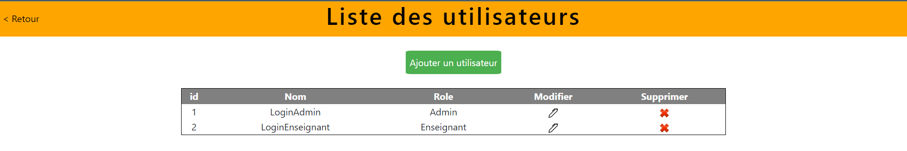

Plateforme de stages (Symfony)
Application web Symfony permettant la gestion des entreprises et des offres de stages. Elle comporte des modules d’ajout, de recherche, d’authentification et d’administration.
Technologies utilisées
PHP, Symfony, MySQL, HTML, CSS
Page de connection
Page d'accueil utilisateur
Dans la liste des entreprises, cliquez sur le «plus» si vous voulez des informations supplémentaires :
Page d'accueil administrateur
Le bouton «Ajouter une entreprise» permet l’accès à un formulaire d’ajout d’une entreprise :
Cliquez sur le stylo afin d’accéder à un formulaire de modification de l’entreprise en question :
Le bouton «Gestion» permet l’accès à une page de gestion des différentes options :
Gestion des utilisateurs :
Gestion des fonctions :
Gestion des employés :
Gestion des spécialités :
Gestion des profils :
Puis de même, cliquez sur le stylo afin d’accéder à un formulaire de modification de l’élément choisit :